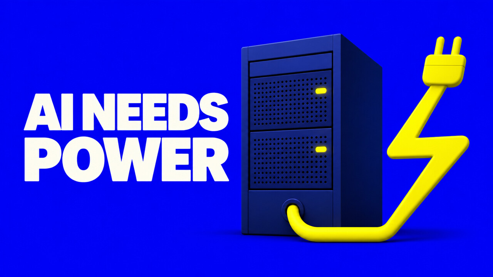

Before the next AI model can answer a question, somebody has to answer a different one.
Where will the electricity come from?
On 5 November 2026, Google announced a $17 billion investment for its first data center in Wyoming. The UN climate conference COP31 was scheduled for 9 to 20 November 2026 in Antalya, Türkiye. The announcement and the conference concern different decisions, but they put a shared question in view. How do we supply a growing appetite for computing while keeping electricity dependable and affordable and meeting the goals countries have set for their energy systems?
Why the cloud has an address
When you upload a document to an AI tool, you can get on with your work without knowing which building received it. The company providing the service has to know exactly where it will run the equipment and how much power it can get there.
The chips do the computing. The facility houses them and keeps them cool. The grid connection brings electricity to the site. Each part needs its own planning. Even a company with the money to build a facility has to work out when it can get the equipment, how the power will be supplied, and what the surrounding system can handle.
As a software engineer, I usually start at the other end of that chain. I’m interested in the person pressing the button and how we get a result back to them. This story follows the same action all the way to the people building the infrastructure.
What the global figures tell us
The International Energy Agency’s 2026 update projects that electricity consumption by data centers could rise from about 485 terawatt-hours in 2025 to 950 in 2030. Its central projection puts data centers at around 3% of global electricity demand in 2030.
These figures cover all data centers. They include AI alongside other services, and the projection can change as investment, demand, and construction change. The global percentage also describes a different scale from the one a local utility or town has to plan for. A facility draws electricity where it is connected. Several developments planned in the same place can matter enormously to the people building that local system.
A local system has its own timetable
A national figure can tell us about scale, but it can’t tell us whether a particular region has room for a proposed facility. Imagine a utility planning for new homes, a factory expansion, and a data center that wants to start in two phases. Those three customers may need upgrades in different places. They may also depend on the same equipment or transmission work getting finished by the same date. One project running late can change the sequence for the others.
The way I’d read the story is to put the construction timetable beside the power timetable. When could the facility begin to use electricity? Which parts of the connection already exist? What needs permits or new equipment? Where would a delay show up first? If the proposal is still taking shape, the best answer might be a range or a list of unresolved decisions.
A reader can follow this without an engineering degree. I’d start by finding the local utility, the body that oversees it, and any public documents that describe the connection. Those sources may each answer a different question. A company’s post can explain what it plans to invest. A regulatory filing or public meeting may reveal who will pay for particular parts of the work and when there will be another decision.
Read the estimate in context
When I see a projection like the IEA’s, I want to know what it includes and where it might be sensitive. A change in how much computing people use, how efficiently the hardware runs, or how quickly facilities can be connected can all affect the result. The projection is a way to examine those possibilities. I read the number alongside the assumptions so I know what I would revisit next year.
The local story has a second set of assumptions. Suppose a company expects to take power in three steps. A utility may need to start construction before it knows how the third step will play out. That raises questions about what the company has committed to buying, whether another customer can use spare capacity, and who carries the cost if plans change. A clear answer to those questions tells me more than a larger headline number.
Read the agreement alongside the announcement
Google says it will pay for the power it uses and cover infrastructure needs directly driven by its growth in Wyoming. I read that as a company commitment. I’d want to see how those arrangements work in practice and what the community can check once the site is running.
If you hear about a new project where you live, these are the questions I’d bring to the conversation.
- Where is the electricity expected to come from?
- Which grid upgrades are needed and how are they being paid for?
- How would the plan change if demand grows more slowly or more quickly than expected?
- Which commitments can the public see and track after the facility opens?
These questions also help distinguish a proposal that makes a useful commitment from one that has already shown how the commitment will be delivered.
Where climate and local planning meet
COP31 and the Wyoming project sit at different levels. The conference brings countries together to discuss climate action. A grid connection is decided through local and regional institutions. I’m interested in how the goals people discuss at one level show up in the decisions being made at the other.
Take a company that says it intends to support new electricity generation. I’d want to know what it is backing, when that supply is expected to come online, and how the facility will get electricity in the meantime. A new project might help the region add capacity. It might also take years to arrive. Those two timeframes are important to anyone trying to understand the facility’s near-term impact.
For a local reader, another useful question is what can be checked after the opening. A future update could list which connection work was finished, how much of the planned facility is operating, and which public commitments still have milestones ahead. For me, that is the difference between being able to follow a story and having to wait for the next announcement to learn anything.
A short checklist for the next announcement
If I were following a proposal in my own area, I’d write down what has been announced, what has been agreed, and what still has to be decided. For a connection, I’d note who is responsible for delivering the work and when the next public update is due. For a commitment about local benefits, I’d keep the original wording so I could compare it with what later happened.
I’d also try to hear from people who work with different parts of the system. A local business owner may know how long a connection normally takes. A resident might care more about what it means for the electricity bill. The utility can explain the equipment and sequence. Those accounts can help a reader understand why people reach different conclusions about the same development.
What I take back to software
I can’t decide where a utility builds a line. I can decide how a feature I’m building uses computing. Suppose a team asks for an assistant to find the expiry date in a stack of supplier documents. I’d look at how the documents are created and what happens after the date is found. A standard form or a well-organised record might solve a lot of the work. Where the documents vary, an AI feature might help a reviewer get to the relevant passage sooner.
The way I would find out is by testing a few examples and measuring how the review changes. Include an easy document, a confusing one, and one where the date is missing. Keep track of the checks a person still has to make. If the tool earns a place, I’d use it where the evidence supports that choice. A useful feature can have a fairly narrow job.
That’s the link I keep coming back to. The software decisions at my desk are small compared with a data center investment, but they are part of the same chain of demand. The more clearly we can explain what a feature does for people, the better placed we are to make decisions about the time, money, and infrastructure we use to provide it.
A decision closer to home
Most of us will never choose where to build a data center. We do get to decide what we ask software to do.
If someone has an invoice number and wants to know its status, a direct lookup might do the job. If they have fifty inconsistent documents and need help finding which ones need review, AI assistance might be worth testing. I’d measure how many useful answers it gives, what it costs, and how much checking a person still has to do.
I’m following the energy questions around COP31 with those two scales in mind. Communities need to know what they’re agreeing to when they host infrastructure. Product teams need to know what they get for the computing they use. As a reader, you can ask either question the next time you see a new AI announcement.
Sources
- Google’s Wyoming data center announcement
- International Energy Agency, Key Questions on Energy and AI
- UNFCCC, COP31 in Antalya